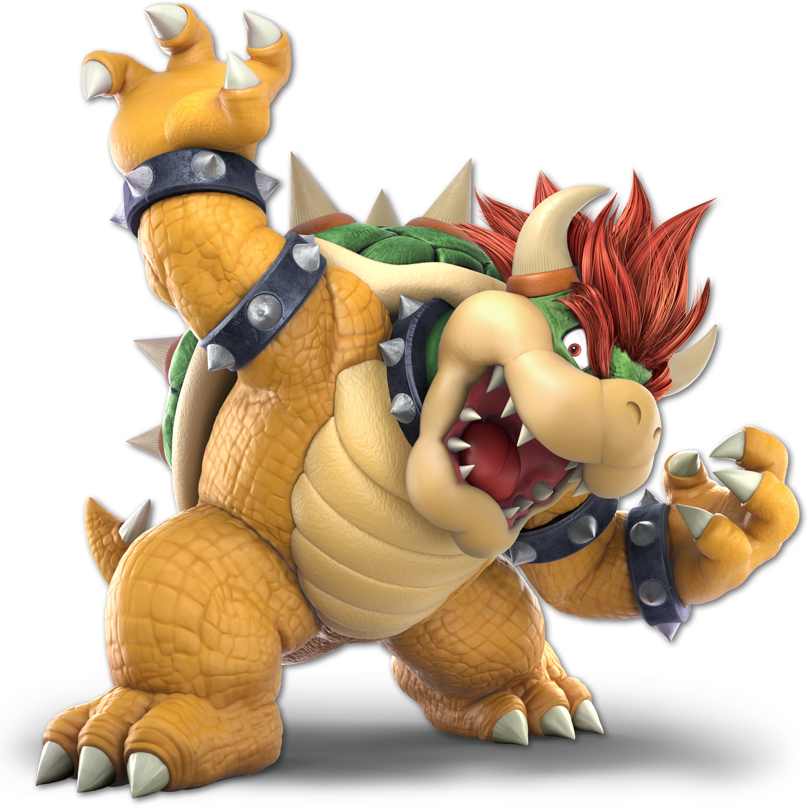

データ集計 2026/4/12時点（Social Blade / RSS フィード）。
登録者（S）
現在地。毎月1日に最新値へ上書き
総再生回数
Shortsバズの残存再生が主力
動画数
運用歴16ヶ月
必要月次ペース
(10,000 − 1,040) ÷ 残り約8.5ヶ月（2026/4起点）
日次再生の振れ幅
最高148.6K（4/3）／最低4.9K（4/7）
Shorts↔横動画の格差
Shorts最高273,249回／横動画最低78回
構造診断：Shorts依存とLong-formの不達
| 区分 | 再生レンジ | 代表動画 |
|---|---|---|
| Shorts | 10,000 〜 273,000 | 「ゴブリンマリオに200%ハンデで勝利」273Kなど |
| 横動画・配信 | 78 〜 5,013 | 「念願の大型TOP8！桜梅桃李」78回・「VIP連勝」5,013回など |
つまり横動画は"存在していない"状態。Shortsで母数は作れている。課題は届ける技術／本編への回遊。
このロードマップでの優先度（大城さん向け）
- 最優先 — 06章 Shorts × Long 配分設計：Shortsで273Kバズを起こせる強みをLong-formに接続する導線（終盤のCTA・固定コメント・関連動画・チャプター）
- 最優先 — 05章 APV 50〜60% への引き上げ：冒頭15秒の"約束"を言語化。横動画78回は露出されていない＝APVが閾値未達の可能性大
- 重要 — 09章 Test & Compare：サムネ＋タイトルをYouTube公式A/Bに。横動画のサムネはShortsの熱量と断絶している
- ブランド — 01章 "クッパの人"：Shortsで作れた認知を横動画のブランディングにも引き継ぐ（サムネ色味・フォント統一）

Super Thanks 帯
YPP段階的開放の最初の入口。有料機能の一部が使える帯域
広告収益ライン
登録者1,000＋視聴時間／Short視聴等で広告収益の申請条件に到達
ブランドライン
コラボと小案件の門戸が目に見えて広がる帯
① 基準値を上げる
「今月1本出せた」で満足するなら、その基準値のまま1年経つ。「今の自分の当たり前」を四半期ごとに上書きするのがこの章の狙い。CTR 2%で満足しない。APV 40%で満足しない。基準を上げた瞬間、行動が変わる。
② 環境至上主義
伸びている配信者の隣にいる人の基準値は自然と上がる。月1コラボは社交ではなく環境整備。視聴者を交換するためではなく、自分の基準値を上げるために組む。Xでの絡み、リアルの知人も同じ。
③ 結果至上主義が過程を輝かせる
「本数を出した」「編集を頑張った」は過程。評価は登録者純増と視聴時間で1つだけ。結果にコミットして初めて、過程の1本1本が意味を持つ。結果を追わない過程は、ただの活動。
④ 圧倒的な当事者意識
「アルゴリズムのせい」「ジャンルが悪い」「時期が悪い」— この言葉が出た瞬間、打ち手は止まる。全部を自分事として扱う。CTRが低いのは自分のサムネ、APVが低いのは自分の冒頭、コラボが決まらないのは自分の設計。ここから打ち手が出る。
⑤ ネクストアクション厳守 × フィードバックループ
仮説 → 投稿 → 数値 → 学び → 次の1手。このループを最速で回した人が勝つ。来週やる「1つだけ」を火曜15分で決めきる。3つ出したら1つに絞る。絞る作業が一番伸びに効く。
目安表（M＝12ヶ月の場合）
| 現在 S | 必要ペース（人/月） |
|---|---|
| 0 | 約834 |
| 1,000 | 約750 |
| 2,500 | 約625 |
| 5,000 | 約417 |
| 7,500 | 約208 |
※ 2025年のアルゴリズム改定で、視聴後の満足度（likes／shares／アンケート等）が主要信号に格上げされたため、「雑に量を出す」戦略は逆効果になりやすい。

- サムネ3パターン固定：大会 / 切り抜き / 企画（別紙ガイド準拠）。感情フレーズ＋レンダ素材で統一
- Test & Compare：YouTube公式のタイトル＋サムネA/B機能を毎投稿で使う。0.5%差でも積むと効く
- 冒頭15秒の約束：何が見られるかを最初の15秒で言い切る。APVの半分以上はここで決まる
- 週次レビュー：火曜15分にStudio→インプレ・CTR・APV・純増をメモ→来週の1手を決める

- 月1コラボ：自分の0.5〜5倍帯の配信者・プレイヤーと対戦／企画。社交ではなく「基準値を上げる環境づくり」
- 公式コラボタグ：2025年追加された「共同アップロード」で最大4人が1本を全員のフィードに流せる
- 切り抜き系列名の固定：「クッパ対〇〇」「Rearlet VIP録」のようにタイトル頭を型化してリピート視聴を作る
- X運用：クリップ＋検索されやすい語（キャラ名・大会名）を本文に。URLは最後

- 伸びた本編の再編集：ハイライトを45〜90秒ShortsにしてLong-formへ誘導。2025のShortsアルゴは本編と独立評価なのでテンプレ化して量産できる
- 大会カレンダー連動：前週（予習）／当日（ハイライト）／翌日（反省）の3点セット
- 伸びたサムネの要素分解：色／表情／文字サイズを抽出し、他動画に適用して再現性を作る
- 英語字幕 or 副題：日本のゲームCPMは控えめ。英語圏に到達するだけで母数と単価の両方が上がる

- 伸びない理由を外に置かない：アルゴ・時期・競合ではなく「自分のどの数字か」で原因を3つに絞る
- 年末まとめ枠：ベストプレイ／今年の振り返り／来年の宣言を1本で
- 次回予告を動画末尾に必ず入れて週次の視聴導線を固定
- 年末振り返り：伸びた要因Top3／落ちた要因Top3を数値で残し、来年のマインドセクションに反映
週次で見る4つ
| 指標 | 2026の目安 | 打ち手 |
|---|---|---|
| CTR | 4〜10%（2%以下で露出停止） | Test & Compare、感情フレーズ＋レンダ素材、サムネ3パターン固定 |
| APV（平均視聴率） | 50〜60%で合格、70%+で優先露出 | 冒頭15秒、テンポ、テロップ、章立て（チャプター） |
| Satisfaction | 2025新主要信号 | likes／shares／アンケート／視聴後もYouTubeに残ったか。誇張釣りは逆効果 |
| インプレッション | 露出の量 | 投稿頻度、Shorts→本編送客、関連・ホーム面への乗り |
Shorts（45〜90秒）
- 評価軸 = swipe通過率 / loop率 / shares
- 役割：新規到達。視聴の約80%は非登録者
- 単価はLong-formの1/20〜1/100。集客専用と割り切る
- 目標：週2〜4本。テンプレ化して1本10分で量産できる状態を作る
Long-form（8分＋）
- 評価軸 = APV / satisfaction / session
- 役割：収益と「この人を見に来る」固定客づくり
- 8分以上でミッドロール広告を入れられる
- 目標：週1本以上。ショートで釣って本編で回収の導線を毎回作る
投稿の最低ライン
- Shorts 2〜4本（大会クリップ／VIP切り抜き）
- Long-form 1本（週1でも8分＋で勝負）
- 配信 1〜2回（切り抜きの原料）
火曜15分（フィードバックループ）
- Studioで先週比：CTR・APV・純増をメモ
- 伸びた動画の「冒頭の約束」を一文で言語化
- 来週のサムネラフを3案だけ出す
- 次の1手を1つに絞る（3つ並べたら捨てる）
- 今週の投稿枠：Long-form 1本／Shorts 2本の中身を決める
- Test & Compare：直近の本編にタイトル3案を入れて走らせる
- 冒頭15秒の約束：今週の本編で「何が得られるか」を一文で書き出す
- コラボ候補：0.5〜5倍帯の配信者を3人リストアップ
- 火曜15分：Studioの数字を1枚にメモ
- 基準値の更新：今月のCTR／APVの下限を書き直す
- 今週捨てるもの：やらないと決めることを1つ明記
登録者購入
BANリスクが最大。短期で見ても検出はほぼ確実。
釣りタイトルだけ
2025のsatisfaction信号でマイナス評価。APVが落ち次にインプレが減る。
Inauthentic content（2025/7〜）
量産・テンプレ差し替えだけのAI動画はチャンネル単位で収益化剥奪のリスク。AI活用自体はOKだが「大量生産・最小変更」が対象。
Shorts単騎戦略
Shortsだけで登録者を稼いでも本編回遊が薄く、単価も固定客も育たない。Shorts：Long = 入口：本丸 の設計を守る。
炎上ネタ
界隈は狭い。短期で伸びてもコラボ相手が減り長期で詰む。
無計画な増量
品質が落ちると悪化が固定化。切り抜き・編集の工程を先にテンプレ化してから量を増やす。
- YouTubeヘルプ：収益化のポリシー（YPP段階的）
- YouTubeヘルプ：Test & Compare（タイトル＋サムネA/B）（ヘルプ内で検索）
- YouTubeヘルプ：Shorts（最大3分対応）
- YouTube Creators（公式）